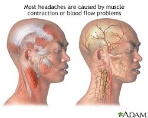

Symptoms
Headaches can radiate across the head from a central point or have a vise-like quality. They can be sharp, throbbing or dull, appear gradually or suddenly. They can last from less than an hour up to several days.
The symptoms of a headache depend to some extent on what type of headache it is.
Tension headache: There may be general, mild to moderate pain that can feel like a band around the head. They tend to affect both sides of the head.
Migraine headache: There is often a severe throbbing pain in one part of the head, often the front or the side. There may be nausea and vomiting, and the person may feel especially sensitive to light or noise.
Cluster headaches: These can cause intense pain, often around one eye. They usually happen around a particular time of year, possibly over a period of 1 to 2 months..